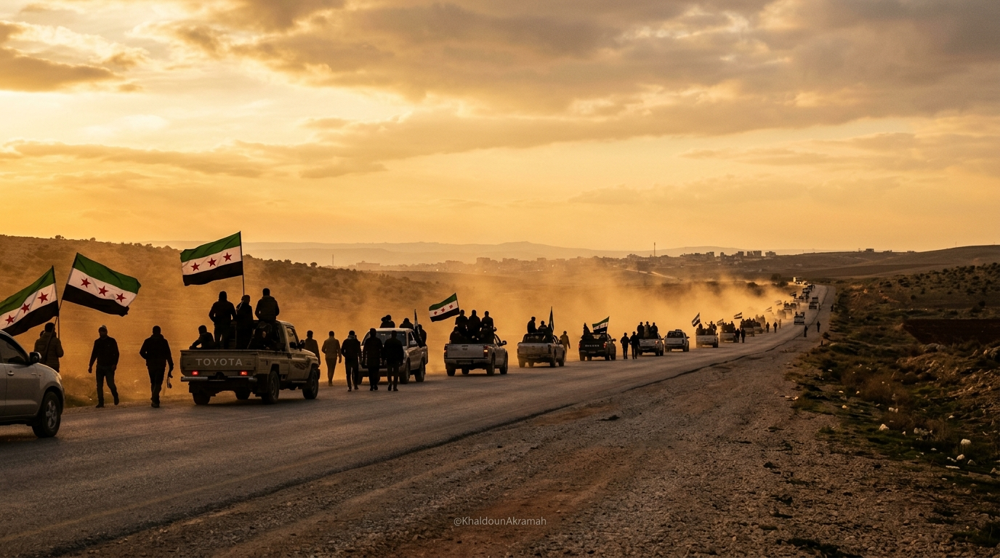

حسبوا أن الخيام مقابر للأحياء،
فكانت مصانع للرجال الذين كسروا قيود نصف قرن من الاستبداد.
البرد لا يكسر من في قلبه قضية
لم تكن الخيمة مجرد قماشٍ وحبال في مهب عواصف الشمال، بل كانت متراساً أخلاقياً في وجه عالمٍ أطبق الصمت. تجمدت أطراف الصغار في ليالي كانون، وابتلعت الوحول ممرات المخيمات، لكن الرؤوس بقيت مرفوعة لا تنحني إلا لله.
لقد توهمت عصابة الأسد المجرمة أن سياسة التهجير الممنهج والبراميل المتفجرة ستحول أحرار الشام إلى أرقام منسية على هوامش الإغاثة. لكن الذين خسروا سقوف بيوتهم لم يخسروا شرفهم، وبقيت عيونهم معلقةً بيوم الرجوع الذي لا ريب فيه.
«الخيمة لم تكن ملجأ ضعف، بل كانت معسكر الصبر الذي ينتظر فجر الحساب.»
ولدوا في المنفى ولم ينسوا الدار
في تلك الغرف القماشية الضيقة، تعلّم الصغار أبجدية الحرية قبل أن تكتمل خطوط دفاترهم. حفظوا أسماء قراهم ومدنهم التي هُجّر منها آباؤهم، من معرة النعمان إلى الغوطة وحمص وحلب ودرعا والساحل؛ لم يروا قصور الحكم المسلوبة، لكنهم عرفوا أن الحق لا يسقط بالتقادم.
كان كل قلمٍ يُبرى على ضوء شاحب بمثابة إعلان بقاء وعهد لا يخلفه الرجال. هؤلاء الفتيان الذين حاول إعلام النظام الطائفي تحقيرهم هم أنفسهم السواعد الواعية التي تقدمت الصفوف حين دقت ساعة الحسم.
«كبروا بلا أسقفٍ تقيهم المطر، لكنهم حملوا في صدورهم وطناً لا تهزمه العواصف.»

في 8 كانون الأول 2024، تحركت الأقدام التي علّمتها الخيام ألا تركع،
فأشرقت شمس دمشق حرةً أبية وسقط صنم الاستبداد.
يوم تهاوت أصنام الأسدين
نصف قرنٍ من القهر الأسدي الإجرامي، وحقول التعذيب في صيدنايا وتدمر، ومئات آلاف الشهداء والمغيبين، وبراميل الموت والغازات الكيماوية؛ كل تلك الترسانة الوحشية تهاوت كأعجاز نخلٍ خاوية أمام عزم الرجال الذين لم يبقَ لديهم ما يخسرونه سوى أغلالهم.
فرّ رأس العصابة الطائفية مذعوراً، وتلاشت أفرع المخابرات التي لطالما كتمت أنفاس الشعب السوري. تهاوت التماثيل في الساحات العامة، ودخل أبناء المحرر عاصمتهم ومدنهم بروح الفاتحين الأبرار الذين لا يثأرون بل يبنون ويصونون كرامة الإنسان.
«تهاوت أصنام الطغاة في التراب، وبقيت إرادة المظلومين تكتب تاريخ سوريا الطاهر.»
الذين أُخرجوا من ديارهم عادوا إليها أحراراً
يا من تعيرون الناس بالخيمة؛ إن الخيام هي التي صنعت رجال التحرير، وقصور الخيانة هي التي أنتجت الهزيمة والهروب. من بين تلك الشوادر الممزقة انطلقت جحافل التحرير لتطهر دمشق وحلب وحمص وحماة وإدلب واللاذقية وطرطوس ودرعا والسويداء ودير الزور والرقة والحسكة من دنس العصابة الطائفية البائدة.
اليوم تتنفس سوريا برئة واحدة تجمع كل أطيافها، راية الثورة ذات النجوم الثلاث الحمراء ترفرف فوق مباني السيادة، ومرحلة إعادة الإعمار تنطلق بسواعد الأطهار الذين لا يدينون بالولاء إلا لتراب هذا الوطن.
«من رضع العزة تحت حبال الخيام، لا يرضى بسقفٍ أدنى من عنان السماء.»
شواهد من ذاكرة الصمود
سقطت دولة الخوف والطغيان،
وبقيت راية أبناء الخيم خفاقةً في سماء سوريا الحرة.
عن هذه الوثيقة
هذا الموقع وثيقة وفاء واعتزاز سيادي بأبناء المحرر السوري الذين دفعوا أثمان الحرية من أرواحهم وصبرهم في المخيمات، حتى تحقق وعد الله بسقوط نظام الاستبداد المجرم في 8 كانون الأول 2024. لا مكان بعد اليوم للغة الاستصغار؛ فمن صنعوا النصر هم أسياد هذا الوطن وصنّاع مستقبله.